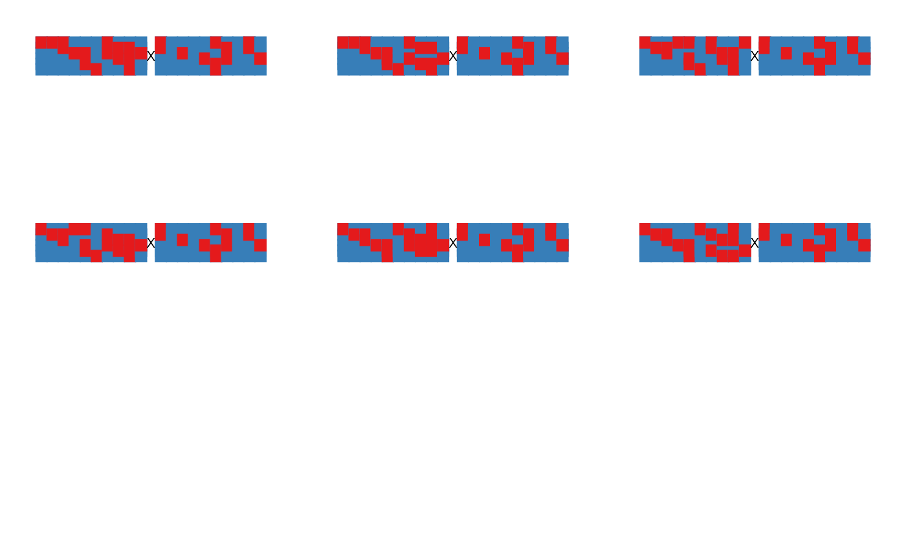

Returns a list of possible linkage phase configurations using
the two-point information contained in the object mappoly.twopt
as elimination criteria
an object of class mappoly.sequence
the LOD threshold used to determine whether linkage phases compared via two-point analysis should be considered
an object of class mappoly.twopt
containing the two-point information
marker to be added to the end of the linkage
group. If NULL (default) adds all markers contained in
input.seq. Mostly for internal usage
(optional) an object of class two.pts.linkage.phases
containing the previous info about linkage phase configuration.
Mostly for internal usage
an object of the class two.pts.linkage.phases
currently ignored
An object of class two.pts.linkage.phases which
contains the following structure:
a matrix with all possible linkage phase configurations for both parents, P and Q
a matrix with all recombination fractions
the ploidy level
the sequence of markers
the LOD threshold
the dataset name
Mollinari, M., and Garcia, A. A. F. (2019) Linkage analysis and haplotype phasing in experimental autopolyploid populations with high ploidy level using hidden Markov models, _G3: Genes, Genomes, Genetics_. doi:10.1534/g3.119.400378
seq.all.mrk <- make_seq_mappoly(hexafake, 'all')
id <- get_genomic_order(seq.all.mrk)
s <- make_seq_mappoly(id)
seq10 <- make_seq_mappoly(hexafake, s$seq.mrk.names[1:10])
twopt <- est_pairwise_rf(seq10)
#> INFO: Going singlemode. Using one CPU for calculation.
## Using the first 10 markers
l10.seq.3.0 <- ls_linkage_phases(input.seq = seq10, thres = 3, twopt = twopt)
l10.seq.3.0
#>
#> This object is too complex to print. Here is a summary:
#> ---------------------------------------------
#> There is (are) 6 possible linkage phase(s)
#> based on two-point analysis.
#> ---------------------------------------------
#> The threshold assumed to discard unlikely
#> linkage phases was 3
plot(l10.seq.3.0)
l10.seq.2.0 <- ls_linkage_phases(input.seq = seq10, thres = 2.0, twopt = twopt)
l10.seq.2.0
#>
#> This object is too complex to print. Here is a summary:
#> ---------------------------------------------
#> There is (are) 6 possible linkage phase(s)
#> based on two-point analysis.
#> ---------------------------------------------
#> The threshold assumed to discard unlikely
#> linkage phases was 2
plot(l10.seq.2.0)

l10.seq.1.0 <- ls_linkage_phases(input.seq = seq10, thres = 1.0, twopt = twopt)
l10.seq.1.0
#>
#> This object is too complex to print. Here is a summary:
#> ---------------------------------------------
#> There is (are) 2 possible linkage phase(s)
#> based on two-point analysis.
#> ---------------------------------------------
#> The threshold assumed to discard unlikely
#> linkage phases was 1
plot(l10.seq.1.0)
## Using the first 5 markers
seq5 <- make_seq_mappoly(hexafake, s$seq.mrk.names[1:5])
l5.seq.5.0 <- ls_linkage_phases(input.seq = seq5, thres = 5, twopt = twopt)
l5.seq.5.0
#>
#> This object is too complex to print. Here is a summary:
#> ---------------------------------------------
#> There is (are) 9 possible linkage phase(s)
#> based on two-point analysis.
#> ---------------------------------------------
#> The threshold assumed to discard unlikely
#> linkage phases was 5
plot(l5.seq.5.0)
l5.seq.3.0 <- ls_linkage_phases(input.seq = seq5, thres = 3, twopt = twopt)
l5.seq.3.0
#>
#> This object is too complex to print. Here is a summary:
#> ---------------------------------------------
#> There is (are) 3 possible linkage phase(s)
#> based on two-point analysis.
#> ---------------------------------------------
#> The threshold assumed to discard unlikely
#> linkage phases was 3
plot(l5.seq.3.0)
l5.seq.1.0 <- ls_linkage_phases(input.seq = seq5, thres = 1, twopt = twopt)
l5.seq.1.0
#>
#> This object is too complex to print. Here is a summary:
#> ---------------------------------------------
#> There is (are) 1 possible linkage phase(s)
#> based on two-point analysis.
#> ---------------------------------------------
#> The threshold assumed to discard unlikely
#> linkage phases was 1
plot(l5.seq.1.0)